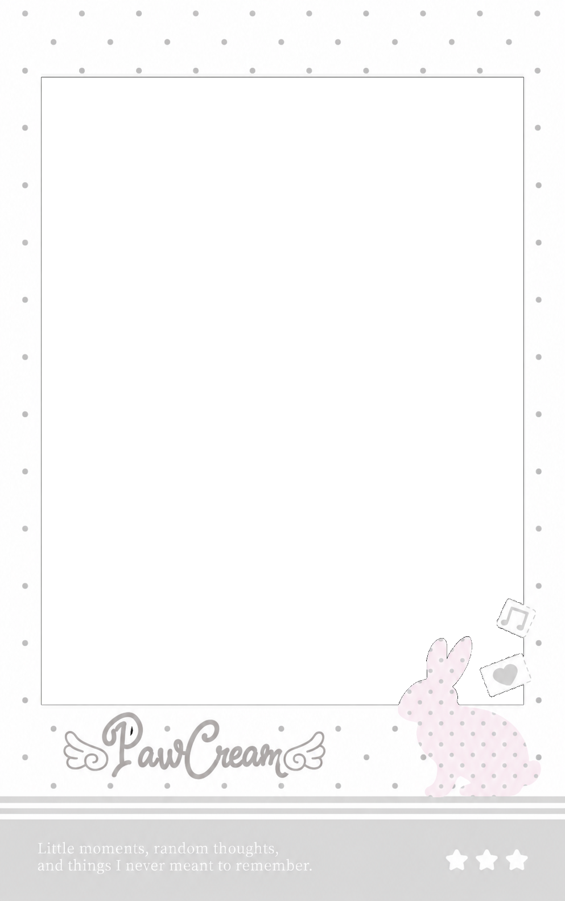

PawCream 工作室 ♡
把喜欢的今天收藏起来，带一颗糖果走吧
选一张相纸
01 / 03放入照片
已选择 0 / 1点击上面的照片格，选择一张喜欢的照片 ♡
100%
选好照片后，可用手指或鼠标在相纸上拖动位置
照片仅在当前设备内处理，不会上传 PawCream 服务器。
MEMBERSHIP · PAWCREAM
一起写下喜欢的名字 ♡
原站打字机登录与注册界面 · 离线展示

PAWCREAM · HELLO
欢迎回来 ♡
邮箱
your@email.com
密码
••••••••
邮箱
your@email.com
密码
••••••••
昵称
给自己取个昵称 ♡
邀请码
填写邀请码
保留原站打字机视觉与字段布局。为了保护账号安全，离线小工具不接收密码，也不模拟云端登录。
MY LITTLE BOX
我的私人云端铁盒 ♡
保留铁盒与姓名贴外观 · 登录后可在网站同步收藏

 你的昵称
你的昵称
盒子还是空空的，先做一张拍立得吧 ♡
私人照片需要账号及云端服务，这里展示的是原站铁盒界面，不读取或上传个人照片。
LEAVE A LITTLE NOTE
留言贴 ♡
把想说的话写在纸上，贴到 PawCream 留言墙
便签 01
给今天留一个小小的位置 ♡
界面示意 · 非真实留言便签 02
来这里，听听每个人的故事
界面示意 · 非真实留言便签 03
把想说的话装进一张纸里
界面示意 · 非真实留言登录后，你写下的留言贴会出现在这里 ♡
真实留言、点赞和昵称都在工作室网站中同步。此处不显示其他用户的数据。
OUR PHOTO WALL
公共返图墙 ♡
左侧大图预览 · 右侧相纸小图切换

这里保留原站返图墙的视觉和切换交互。因为离线限制，不显示真实用户公开照片。
更多功能见工作室网站 ♡
想登录账号、收藏私人照片、写便签或看真实返图，请在浏览器打开：
joooo123.github.io/PawCream/
这里是小红书离线版，不会获取你的 PawCream 登录密码。